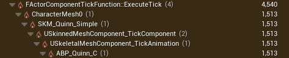
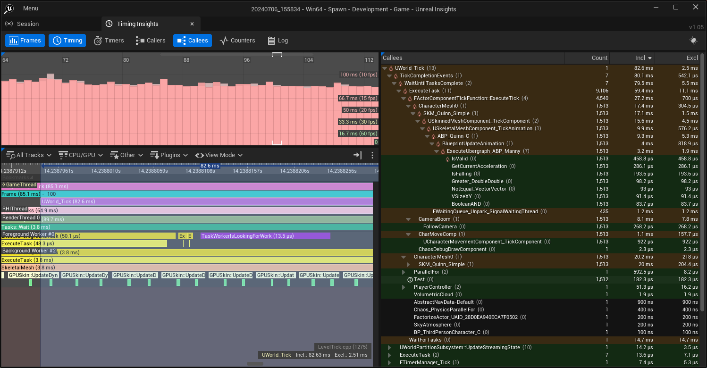

What Unreal Insights tells us about the test project
Considering for a moment what we see in the Callees view is data like this:

This is not a hierarchy of function names, it is a hierarchy of timing event names. Sometimes the event name is the same as the function name generating the event. Sometimes a "::" in a function name has been replaced by a "_". Sometimes the event name is the name of the asset being processed. Mousing over the icon next to the event name in the Callees view sometimes tells us the source location, sometimes it just says "N/A". This makes it a slow process to find out where the named event is actually generated in the engine.
This table shows the correspondence between the event name and the function name for the above Callee view. The "Function Name" column holds the name of the function which either:
- contains a macro (such as SCOPED_NAMED_EVENT) which creates the timing event
- directly contains a scoped object such as
FScopeCycleCounterUObjectwhich creates the timing event - directly calls macros like UE_TRACE_LOG which write directly to the trace log to create timing events
| Event Name | Function Name | Notes |
|---|---|---|
| FActorComponentTickFunction::ExecuteTick | FActorComponentTickFunction::ExecuteTick() | Matching event name and function name |
| CharacterMesh0 | FActorComponentTickFunction::ExecuteTickHelper() | This is the name of the mesh which is being processed |
| SKM_Quinn_Simple | FActorComponentTickFunction::ExecuteTickHelper() | This is the name of the skeletal mesh being processed |
| USkinnedMeshComponent_TickComponent | USkinnedMeshComponent_TickComponent | Similar event name and function name |
| USkeletalMeshComponent_TickAnimation | USkeletalMeshComponent::TickAnimation() | Similar event name and function name |
If we run the Development build of the test project while the session browser is open, we see this in the callers window:

We can see that we are calling the tick function on a lot of stuff:
- we are running
USkinnedMeshComponent_TickComponent()to update animation for each spawned actor, when they are not moving - we are calling the
UCharacterMovementComponent_TickComponent()on each spawned actor when they are not moving - the actor we are using has a unnecessary camera component which is ticking
- we are using
Tick()to unnecessarily update characters we cannot see.
Which Actors can we see
Logically we can determine which actors the player character can see by casting a ray from the head of the player character to points on the target actor. The ray will either hit the target actor if they can be see or some intervening object, such as a wall, if they cannot.
GET ONE OF THE EXISTING IMAGES
whats this all about???
USkeletalMeshComponentBudgeted IAnimationBudgetAllocator
from discord
void UMyGameInstanceInit() { SuperInit(); USkeletalMeshComponentBudgetedOnCalculateSignificance().BindUObject(this, &UMyGameInstanceHandleSkelMeshBudget); }
FTransform CurInstanceTransform; wd
replace distant actors with simpler ones a proxy
- move randomly no ai
- remove them entirely use a pool respawn when close
- stop simulating physics after a few seconds on objects so they rest, reenable when hit by plyer or other objects
- distance enemies have simpler LOD mesh, limited animations, update only every ~3 frames
r.VisualizeOccludedPrimitive 1